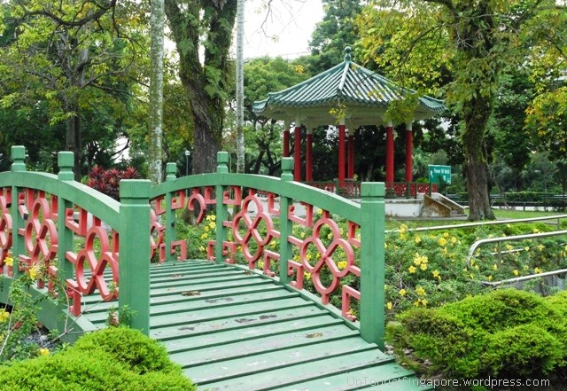

Information
Yunnan Gardens is located: 12 Nanyang Drive, 637721 and offers beautiful walkways and scenery. There are some notable locations which will be provided below
Yunnan Gardens is located: 12 Nanyang Drive, 637721 and offers beautiful walkways and scenery. There are some notable locations which will be provided below
The Doorway

The Pavilion

The Bridge
